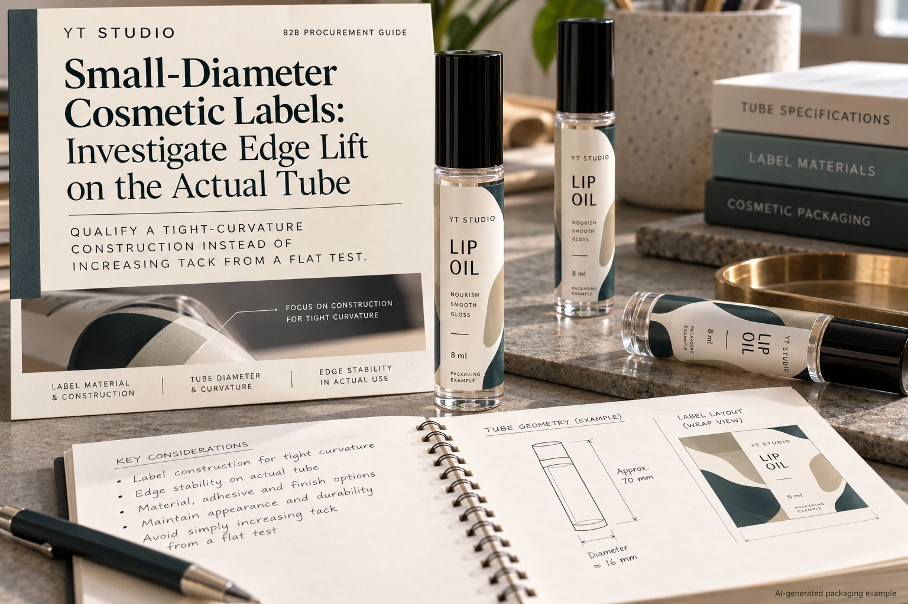
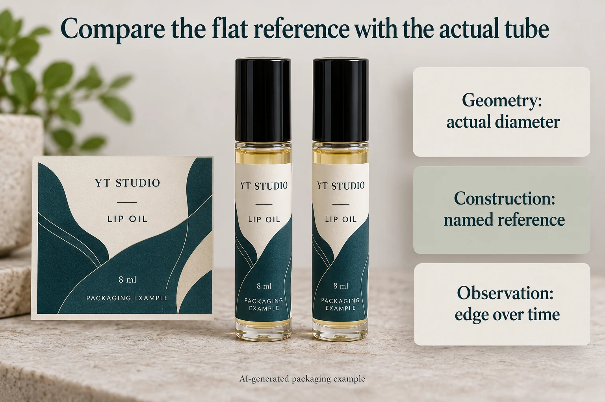

A lip-oil label lies neatly on the sample sheet. On the narrow tube, one end begins to stand away. The obvious request is a stronger adhesive. It may also be the wrong first request: the flat sample and the wrapped tube do not present the same job.
For small-diameter cosmetic labels, review the actual curvature, construction and edge arrangement together. A flat-surface adhesive number cannot approve a tight wrap. Establish where the lift occurs and which surfaces meet before changing the material or adding overlap.

Identify the edge before naming the failure
Call the two ends of the wrap the leading and trailing edges, and mark them on a photograph with the tube closed. Record whether the trailing end touches the tube, an unprinted area of the label, a printed coating or a protective finish. These are different bonding surfaces.
A gap between ends and an overlapping wrap are different designs. An overlap might be worth evaluating, but it moves part of the attachment onto another label surface. Adding it without revising the construction and artwork brief can exchange one uncertainty for another.
Avery's flagging guidance identifies lifting on cylindrical products and discusses compatibility, handling and overlap in its own context. It supports investigating the application; its suggested arrangement is not approval for every printed cosmetic label. Ask the actual converter which edge construction it proposes.
Keep curvature separate from contamination
Obtain the diameter of the usable cylindrical panel and identify any taper. Measure the panel rather than copying a nominal tube capacity. Also record the label's width around the tube, its height and the proposed gap or overlap. A narrow container can have a usable panel much smaller than its overall silhouette suggests.
Then identify the surface and its preparation. Coatings, filling residue, handling and the condition of stored tubes can matter. If one sample was applied to a freshly unpacked tube and another after filling, an unexplained difference should not immediately become evidence against the adhesive.
Our adhesive sample record establishes preparation and observation history. Use it here, but add the curvature and edge-contact fields. The additional decision is whether a named construction and wrap arrangement suit this particular narrow geometry.
Ask for the complete candidate construction
Request the face material, thickness reference, adhesive, printed surface and protective finish. Ask the supplier which features make the candidate relevant to a tight-curvature application. Do not translate a favorable flat-panel peel or tack result into a minimum supported tube diameter.
The proposed label may need evaluation as a finished construction rather than a raw-stock swatch. Printing or finishing can change the surface under an overlap. A demonstration using an unprinted sample leaves that interface unanswered. Keep that difference visible instead of recording both samples under one informal material name.
There is no universal diameter, edge gap, waiting period or holding force supplied by this guide. Obtain the appropriate instructions and review method from the converter and container team. Changing application settings also belongs with the operator; this article is not a machine-adjustment procedure.
Build a narrow-tube comparison that someone else can repeat
| Input | Record | Hold when |
|---|---|---|
| Tube | Supplier reference, finish, usable diameter and any taper | The tested tube cannot be matched to the production pack |
| Wrap | Actual size, gap or overlap, and the receiving surface under each end | Overlap contacts an unidentified print or finish |
| Label | Complete construction and printed sample revision | Only a flat raw-stock result is available |
| Application | Agreed preparation, method, operator and application time | Samples had materially different histories |
| Observation | Edge location, agreed interval, defined handling and photographs | The result has no agreed acceptance owner |
Complete the tube and wrap rows first. Identify candidate samples, use the agreed application method and keep the observation schedule consistent. Record what happened at each end without forcing the finding into a cause. If the ends behave differently, check their actual contact surfaces before requesting another adhesive.

Two reasonable routes can remain open
A hypothetical brand can accept a revised wrap layout with an identified overlap landing area. It has a reason to evaluate that geometry with the final print and finish, including whether the seam remains acceptable in the hand.
Another brand needs a visible gap because of its design or application method. Its supplier should evaluate a construction for that arrangement rather than quietly changing the artwork into an overlap. The right response may be another construction, a different panel or an honest limit on what can currently be supported.
A label staying flat on a bench does not settle either route. Conversely, a single poorly identified lifted sample does not establish that all labels on narrow tubes are unsuitable. Resolve the variable that prevents a meaningful decision.
Send the tube and the unresolved edge question
For custom cosmetic labels, provide the actual tube reference, usable diameter, label dimensions, gap or overlap drawing, artwork, construction candidates and quantity per design. The small-tube layout guide covers cap and base clearance; those remain separate from curved-surface attachment.
Use the inquiry form to prepare the request, then send sample photographs and specification files by email or WhatsApp. The form does not upload attachments. Ask which candidate and edge arrangement the supplier can evaluate against the actual tube.